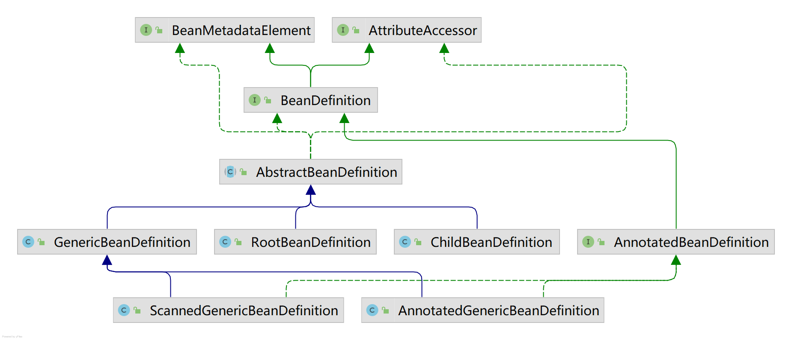
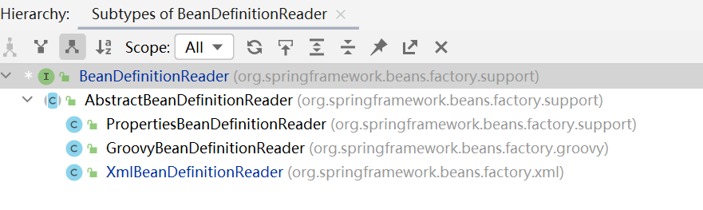

Spring源码 核心注解
注解
功能
@Bean
容器中注册组件
@Primary
同类组件如果有多个，标注主组件
@DependsOn
组件之间声明依赖关系
@Lazy
组件懒加载(使用的时候才会创建)
@Scope
声明组件的作用域(SCOPE_PROTOTYPE，SCOPE_SINGLETON)
@Configuration
声明这是一个配置类，替换配置文件
@Component
@Controller、@Service、@Repository
@Indexed
加速注解，标注了@Indexed的组件，直接会启动快速加载
@Order
数字越小优先级越高，越先工作
@ComponentScan
包扫描
@Conditional
条件注入
@Import
导入第三方Jar包中的组件，或定制批量导入组件逻辑
@ImportResource
导入以前的xml配置文件，让其生效
@Profile
基于多环境激活
@PropertySource
外部properties配置文件和JavaBean进行绑定，结合ConfigurationProperties
@PropertySource
@PropertySource组合注解
@Autowired
自动装配，默认按类型装配
@Qualifier
精确指定，默认按名称装配
@Resource
来自于JSR-250，非Spring提供，默认按名称装配
@Value
取值、计算机环境变量、JVM系统。@Value(“${XX}”)
@Lookup
单例组件依赖非单例组件，非单例组件获取需要使用方法
Resource&ResourceLoader Resource 需要处理不同类型的外部资源(URL、File、ClassPath等等)，而且处理这些资源步骤都是类似的(打开资源，读取资源，关闭资源)。Spring提供Resource接口来统一这些底层资源一致的访问，作为所有资源的统一抽象 。
Resource体系
Resource
1 2 3 4 5 6 7 8 9 10 11 12 13 14 15 16 17 18 19 20 21 22 23 24 25 26 27 28 29 30 31 32 33 34 35 36 37 38 39 40 41 42 43 44 45 46 47 48 49 50 51 52 53 54 55 56 57 58 59 60 61 62 63 64 65 66 67 68 69 70 71 72 public interface Resource extends InputStreamSource boolean exists () default boolean isReadable () return exists(); } default boolean isOpen () return false ; } default boolean isFile () return false ; } URL getURL () throws IOException ; URI getURI () throws IOException ; File getFile () throws IOException ; default ReadableByteChannel readableChannel () throws IOException return Channels.newChannel(getInputStream()); } long contentLength () throws IOException long lastModified () throws IOException Resource createRelative (String relativePath) throws IOException ; @Nullable String getFilename () ; String getDescription () ; }
ByteArrayResource：对于字节数组的实现，为其构造一个ByteArrayInputStream；
ClassPathResource：ClassPath类型资源的实现，使用指定的Class或ClassLoader加载资源。用来访问类加载路径下的资源，该种类型在Web应用中可以自动搜索位于WEB-INF/classes下的资源文件，而无需使用绝对路径访问；
InputStreamResource：InputStream的实现，如果需要将资源描述符保存在某处，或者如果需要从流中多次读取，不要使用InputStreamResource；
UrlResource：对于java.net.URL类型资源的实现，支持File和URL的形式，既可以访问网络资源，也可以访问本地资源，加不同的前缀即可；
FileSystemResource：对java.io.File类型和java.nio.file.Path资源的封装，支持File和URL的形式。实现了WritableResource接口，支持对资源的写操作；
EncodedResource：实现对文件编码类型的处理。
它们都继承抽象类AbstractResource，AbstractResource实现了Resource接口。自定义Resource只需继承AbstractResource抽象类，它已经实现Resource接口的大部分公共实现，再根据自定义的资源特性覆盖相应的方法。
ResourceLoader Resource定义统一的资源，ResourceLoader加载资源。
ResourceLoader体系
DefaultResourceLoader
1 2 3 4 5 6 7 8 9 10 11 12 13 14 15 16 17 18 19 20 21 22 23 24 25 26 27 28 29 30 31 32 33 34 35 public class DefaultResourceLoader implements ResourceLoader ...... @Override public Resource getResource (String location) Assert.notNull(location, "Location must not be null" ); for (ProtocolResolver protocolResolver : getProtocolResolvers()) { Resource resource = protocolResolver.resolve(location, this ); if (resource != null ) { return resource; } } if (location.startsWith("/" )) { return getResourceByPath(location); } else if (location.startsWith(CLASSPATH_URL_PREFIX)) { return new ClassPathResource(location.substring(CLASSPATH_URL_PREFIX.length()), getClassLoader()); } else { try { URL url = new URL(location); return (ResourceUtils.isFileURL(url) ? new FileUrlResource(url) : new UrlResource(url)); } catch (MalformedURLException ex) { return getResourceByPath(location); } } } ...... }
ProtocolResolver
用户自定义协议资源解决策略，作为DefaultResourceLoader的SPI，允许用户自定义资源加载协议，而不需要继承ResourceLoader的子类。实现ProtocolResolver接口。
1 2 3 4 5 6 7 8 9 10 11 12 13 14 15 16 17 18 19 20 public class MyProtocolResolver implements ProtocolResolver @Override public Resource resolve (String location, ResourceLoader resourceLoader) System.out.println("自定义加载资源......" ); FileSystemResourceLoader fileSystemResourceLoader = new FileSystemResourceLoader(); return fileSystemResourceLoader.getResource("D:\\IDEAProbject\\openSources\\spring-framework\\gradle\\docs.gradle" ); } } public class Demo public static void main (String[] args) DefaultResourceLoader resourceLoader = new DefaultResourceLoader(); resourceLoader.addProtocolResolver(new MyProtocolResolver()); Resource resource = resourceLoader.getResource("/" ); System.out.println(resource.getFilename()); System.out.println(resource.getDescription()); } }
ResourcePatternResolver——ResourceLoader接口的增强
1 2 3 4 5 6 7 8 9 10 11 public interface ResourcePatternResolver extends ResourceLoader String CLASSPATH_ALL_URL_PREFIX = "classpath*:" ; Resource[] getResources(String locationPattern) throws IOException; }
PatchMatchingResourcePatternResolver
ResourcePatternResolver最常用的子类
1 2 3 4 5 6 7 8 9 10 11 12 public class PathMatchingResourcePatternResolver implements ResourcePatternResolver private PathMatcher pathMatcher = new AntPathMatcher(); public PathMatchingResourcePatternResolver () this .resourceLoader = new DefaultResourceLoader(); } }
ApplicationContext&BeanFactory BeanFactory BeanFactory体系
BeanFactory
BeanFactory是访问Spring中Bean容器的顶级接口，提供了IOC容器应遵守的最基本的接口。
1 2 3 4 5 6 7 8 9 10 11 12 13 14 15 16 17 18 19 20 21 22 23 24 25 26 27 28 29 30 31 32 33 34 35 36 37 38 39 40 41 42 43 44 45 46 47 48 49 50 51 52 53 54 55 56 57 58 59 60 61 62 63 64 65 66 67 68 69 70 71 72 73 74 75 76 77 78 79 80 81 82 83 84 85 public interface BeanFactory String FACTORY_BEAN_PREFIX = "&" ; Object getBean (String name) throws BeansException ; <T> T getBean (String name, Class<T> requiredType) throws BeansException ; Object getBean (String name, Object... args) throws BeansException ; <T> T getBean (Class<T> requiredType) throws BeansException ; <T> T getBean (Class<T> requiredType, Object... args) throws BeansException ; <T> ObjectProvider<T> getBeanProvider (Class<T> requiredType) ; <T> ObjectProvider<T> getBeanProvider (ResolvableType requiredType) ; boolean containsBean (String name) boolean isSingleton (String name) throws NoSuchBeanDefinitionException boolean isPrototype (String name) throws NoSuchBeanDefinitionException boolean isTypeMatch (String name, ResolvableType typeToMatch) throws NoSuchBeanDefinitionException boolean isTypeMatch (String name, Class<?> typeToMatch) throws NoSuchBeanDefinitionException @Nullable Class<?> getType(String name) throws NoSuchBeanDefinitionException; @Nullable Class<?> getType(String name, boolean allowFactoryBeanInit) throws NoSuchBeanDefinitionException; String[] getAliases(String name); }
有3个接口直接继承了BeanFactory：HierarchicalBeanFactory、ListableBeanFactory、AutowireCapableBeanFactory。
HierarchiaclBeanFactory
增加了层级结构管理的功能，通过ConfigurableBeanFactory接口中的setParentBeanFactory，允许配置父BeanFactory。
1 2 3 4 5 6 7 8 9 10 11 12 public interface HierarchicalBeanFactory extends BeanFactory @Nullable BeanFactory getParentBeanFactory () ; boolean containsLocalBean (String name) }
ListableBeanFactory
可以列表所有内部定义的bean。
1 2 3 4 5 6 7 8 9 10 11 12 13 14 15 16 17 18 19 20 21 22 23 24 25 26 27 28 29 30 31 32 33 34 35 36 37 38 39 40 41 42 43 44 45 46 47 48 49 50 51 52 53 54 55 56 57 58 59 60 61 62 63 64 65 public interface ListableBeanFactory extends BeanFactory boolean containsBeanDefinition (String beanName) int getBeanDefinitionCount () String[] getBeanDefinitionNames(); <T> ObjectProvider<T> getBeanProvider (Class<T> requiredType, boolean allowEagerInit) ; <T> ObjectProvider<T> getBeanProvider (ResolvableType requiredType, boolean allowEagerInit) ; String[] getBeanNamesForType(ResolvableType type); String[] getBeanNamesForType(ResolvableType type, boolean includeNonSingletons, boolean allowEagerInit); String[] getBeanNamesForType(@Nullable Class<?> type); String[] getBeanNamesForType(@Nullable Class<?> type, boolean includeNonSingletons, boolean allowEagerInit); <T> Map<String, T> getBeansOfType (@Nullable Class<T> type) throws BeansException ; <T> Map<String, T> getBeansOfType (@Nullable Class<T> type, boolean includeNonSingletons, boolean allowEagerInit) throws BeansException ; String[] getBeanNamesForAnnotation(Class<? extends Annotation> annotationType); Map<String, Object> getBeansWithAnnotation (Class<? extends Annotation> annotationType) throws BeansException ; @Nullable <A extends Annotation> A findAnnotationOnBean (String beanName, Class<A> annotationType) throws NoSuchBeanDefinitionException ; @Nullable <A extends Annotation> A findAnnotationOnBean ( String beanName, Class<A> annotationType, boolean allowFactoryBeanInit) throws NoSuchBeanDefinitionException ;}
AutowireCapableBeanFactory
增加了自动装配Bean属性依赖的能力，提供多种自动装配策略和细粒度控制装配过程的方法。
ConfigurableBeanFactory
扩展自HierarchicalBeanFactory和SingletonBeanRegistry，提供了对BeanFactory的配置能力。扩展的内容：类加载器、类型转换、属性编辑器、BeanPostProcessor、作用域、bean定义，处理bean依赖关系等。
ConfigurableListableBeanFactory
继承自上面3个接口，接口的集大成者。提供了分析和修改BeanDefinition以及预实例化单例的工具。、
抽象类
AbstractBeanFactory：实现了ConfigurableBeanFactory大部分功能；
AbstractAutowireCapableBeanFactory：继承自AbatractBeanFactory，并额外实现了AutowireCapableBeanFactory。
实现类
DefaultListableBeanFactory继承自AbstractAutowireCapableBeanFactory，并实现了ConfigurableListableBeanFactory和BeanDefinitionRegistry。
ApplicationContext ApplicationContext扩展自ResourcePatternResolver、ListableBeanFactory、HierarchicalBeanFactory、MessageSource、ApplicationEventPublisher、EnvironmentCapable。ApplicationContext接口作为BeanFactory的派生，因而提供BeanFactory所有的功能，而且ApplicationContext还在功能上做了扩展。有如下功能：
发现、定义、维护、管理Bean；
可以向外界暴露当前程序所运行的环境信息；
国际化；
事件发布/订阅；
解析资源；
层次化上下文；
一些context可能通过持有AutowireCapableBeanFactory来支持自动装载能力。
ApplicationContext体系
ConfigurableApplicationContext
提供了配置ApplicationContext的功能。配置和生命周期方法被封装在这里，以避免它们对使用ApplicationContext的代码可见。
AbstractApplicationContext
模板模式：模板方法定义为 final，可以避免被子类重写。需要子类重写的方法定义为 abstract，可以强迫子类去实现。
refresh：加载或刷新配置
1 2 3 4 5 6 7 8 9 10 11 12 13 14 15 16 17 18 19 20 21 22 23 24 25 26 27 28 29 30 31 32 33 34 35 36 37 38 39 40 41 42 43 44 45 46 47 48 49 50 51 52 53 54 55 56 57 58 59 60 61 62 63 64 65 66 67 68 69 70 71 72 73 74 75 76 77 78 79 80 81 public abstract class AbstractApplicationContext extends DefaultResourceLoader implements ConfigurableApplicationContext { @Override public void refresh () throws BeansException, IllegalStateException synchronized (this .startupShutdownMonitor) { StartupStep contextRefresh = this .applicationStartup.start("spring.context.refresh" ); prepareRefresh(); ConfigurableListableBeanFactory beanFactory = obtainFreshBeanFactory(); prepareBeanFactory(beanFactory); try { postProcessBeanFactory(beanFactory); StartupStep beanPostProcess = this .applicationStartup.start("spring.context.beans.post-process" ); invokeBeanFactoryPostProcessors(beanFactory); registerBeanPostProcessors(beanFactory); beanPostProcess.end(); initMessageSource(); initApplicationEventMulticaster(); onRefresh(); registerListeners(); finishBeanFactoryInitialization(beanFactory); finishRefresh(); } catch (BeansException ex) { if (logger.isWarnEnabled()) { logger.warn("Exception encountered during context initialization - " + "cancelling refresh attempt: " + ex); } destroyBeans(); cancelRefresh(ex); throw ex; } finally { resetCommonCaches(); contextRefresh.end(); } } } }
ClassPathXmlApplicationContext
通过读取类路径下的xml配置文件来构建ApplicationContext
1 2 3 4 5 6 7 8 9 10 11 12 13 public class ClassPathXmlApplicationContext extends AbstractXmlApplicationContext public ClassPathXmlApplicationContext ( String[] configLocations, boolean refresh, @Nullable ApplicationContext parent) throws BeansException { super (parent); setConfigLocations(configLocations); if (refresh) { refresh(); } } }
XmlBeanDefinitionReder
自动扫描和自动装配的功能都是context命名空间提供的。
1 2 3 4 5 6 7 8 9 10 11 12 13 14 public class XmlBeanDefinitionReader extends AbstractBeanDefinitionReader public NamespaceHandlerResolver getNamespaceHandlerResolver () if (this .namespaceHandlerResolver == null ) { this .namespaceHandlerResolver = createDefaultNamespaceHandlerResolver(); } return this .namespaceHandlerResolver; } protected NamespaceHandlerResolver createDefaultNamespaceHandlerResolver () ClassLoader cl = (getResourceLoader() != null ? getResourceLoader().getClassLoader() : getBeanClassLoader()); return new DefaultNamespaceHandlerResolver(cl); } }
ContextNamespaceHandler
1 2 3 4 5 6 7 8 9 10 11 12 13 public class ContextNamespaceHandler extends NamespaceHandlerSupport @Override public void init () registerBeanDefinitionParser("property-placeholder" , new PropertyPlaceholderBeanDefinitionParser()); registerBeanDefinitionParser("property-override" , new PropertyOverrideBeanDefinitionParser()); registerBeanDefinitionParser("annotation-config" , new AnnotationConfigBeanDefinitionParser()); registerBeanDefinitionParser("component-scan" , new ComponentScanBeanDefinitionParser()); registerBeanDefinitionParser("load-time-weaver" , new LoadTimeWeaverBeanDefinitionParser()); registerBeanDefinitionParser("spring-configured" , new SpringConfiguredBeanDefinitionParser()); registerBeanDefinitionParser("mbean-export" , new MBeanExportBeanDefinitionParser()); registerBeanDefinitionParser("mbean-server" , new MBeanServerBeanDefinitionParser()); } }
NamespaceHandlerSupport
策略模式+模板模式
NamespaceHolder继承了NamespaceHolderSupport，可以通过注册BeanDefinitionParser和BeanDefinitionDecorator来解析对应的XML节点，执行需要的功能，注册该功能返回的BeanDefinition。
ComponentScanBeanDefinitionParser
使用component-scan时的自动装配功能并不是BeanFactory实现的，它通过为BeanDefinition设置默认值，完全禁用了每一个Bean的自动装配功能，取而代之的是，它通过BeanPostProcessor拦截Bean的生命周期实现仅对具有@Autowired注解的属性注入。
1 2 3 4 5 6 7 8 9 10 11 12 13 14 15 16 17 18 19 20 21 22 23 24 25 26 27 28 29 30 31 32 33 34 35 36 37 38 39 40 41 42 43 44 public class ClassPathBeanDefinitionScanner extends ClassPathScanningCandidateComponentProvider protected Set<BeanDefinitionHolder> doScan (String... basePackages) Assert.notEmpty(basePackages, "At least one base package must be specified" ); Set<BeanDefinitionHolder> beanDefinitions = new LinkedHashSet<>(); for (String basePackage : basePackages) { Set<BeanDefinition> candidates = findCandidateComponents(basePackage); for (BeanDefinition candidate : candidates) { ScopeMetadata scopeMetadata = this .scopeMetadataResolver.resolveScopeMetadata(candidate); candidate.setScope(scopeMetadata.getScopeName()); String beanName = this .beanNameGenerator.generateBeanName(candidate, this .registry); if (candidate instanceof AbstractBeanDefinition) { postProcessBeanDefinition((AbstractBeanDefinition) candidate, beanName); } if (candidate instanceof AnnotatedBeanDefinition) { AnnotationConfigUtils.processCommonDefinitionAnnotations((AnnotatedBeanDefinition) candidate); } if (checkCandidate(beanName, candidate)) { BeanDefinitionHolder definitionHolder = new BeanDefinitionHolder(candidate, beanName); definitionHolder = AnnotationConfigUtils.applyScopedProxyMode(scopeMetadata, definitionHolder, this .registry); beanDefinitions.add(definitionHolder); registerBeanDefinition(definitionHolder, this .registry); } } } return beanDefinitions; } }
ClassPathBeanDefinitionScanner
1 2 3 4 5 6 7 8 9 10 11 12 13 14 15 16 17 18 19 20 21 22 23 24 25 26 27 28 29 30 31 32 33 34 35 36 37 38 39 40 41 42 protected Set<BeanDefinitionHolder> doScan (String... basePackages) Assert.notEmpty(basePackages, "At least one base package must be specified" ); Set<BeanDefinitionHolder> beanDefinitions = new LinkedHashSet<>(); for (String basePackage : basePackages) { Set<BeanDefinition> candidates = findCandidateComponents(basePackage); for (BeanDefinition candidate : candidates) { ScopeMetadata scopeMetadata = this .scopeMetadataResolver.resolveScopeMetadata(candidate); candidate.setScope(scopeMetadata.getScopeName()); String beanName = this .beanNameGenerator.generateBeanName(candidate, this .registry); if (candidate instanceof AbstractBeanDefinition) { postProcessBeanDefinition((AbstractBeanDefinition) candidate, beanName); } if (candidate instanceof AnnotatedBeanDefinition) { AnnotationConfigUtils.processCommonDefinitionAnnotations((AnnotatedBeanDefinition) candidate); } if (checkCandidate(beanName, candidate)) { BeanDefinitionHolder definitionHolder = new BeanDefinitionHolder(candidate, beanName); definitionHolder = AnnotationConfigUtils.applyScopedProxyMode(scopeMetadata, definitionHolder, this .registry); beanDefinitions.add(definitionHolder); registerBeanDefinition(definitionHolder, this .registry); } } } return beanDefinitions; }
总结
ClassPathXmlApplicationContext默认并不带自动装配功能，它只通过XML中定义的结构去解析并生成BeanDefinition；自动装配功能由context命名空间提供；
context命名空间的组件扫描功能为每一个扫描到的组件都定义了它BeanDefinition的默认值，并在关闭了它的自动装配功能；context命名空间通过向ApplicationContext中添加BeanPostProcessorBean来向底层BeanFactory中注册一批BeanPostProcessor，这其中包括用于实现自动装配的AutowiredAnnotationBeanPostProcessor；AutowiredAnnotationBeanPostProcessor是一个实例化感知BeanPostProcessor，它重写postProcessProperties方法和postProcessPropertyValues方法，拦截了Bean初始化阶段的属性设置post-processing。它对于每一个包含@Value、@Autowired、@Inject注解的属性，通过调用BeanFactory中的resolveDependency来获得需要被注入的Bean或值，并注入进被拦截的Bean中。
ApplicationContext与BeanFactory的区别
BeanFactory是IOC底层容器，面向Spring；ApplicationContext是具备应用特性的BeanFactory超集，面向使用 Spring框架的开发者。额外提供AOP、资源管理、国际化、事件、Environment抽象等功能；
BeanFactroy采用的是延迟加载形式来注入Bean的，即只有在使用到某个Bean时(调用getBean())，才对该Bean进行加载实例化；ApplicationContext则在容器启动时，就实例化Bean，常驻在容器内，也可以为Bean配置Lazy-init=true来让Bean延迟实例化。
BeanDefinition Spring容器启动的过程中，会将Bean解析成Spring内部的BeanDefinition结构 。 不管是是通过xml配置文件的\<Bean>标签，还是通过注解配置的@Bean，它最终都会被解析成一个Bean定义信息（对象），最后我们的Bean工厂就会根据这份Bean的定义信息，对bean进行实例化、初始化等等操作
BeanDefinition Spring中Bean的定义，包含Bean的元数据信息：对应的bean的全限定类名，属性值，构造方法参数值和继承自它的类的更多信息。
1 2 3 4 5 6 7 8 9 10 11 12 13 14 15 16 17 18 19 20 21 22 23 24 25 26 27 28 29 30 31 32 33 34 35 36 37 38 39 40 41 42 43 44 45 46 47 48 49 50 51 52 53 54 55 56 57 58 59 60 61 62 63 64 65 66 67 68 69 70 71 72 73 74 75 76 77 78 79 80 81 82 83 84 85 86 87 88 89 90 91 92 93 94 95 96 97 98 99 100 101 102 103 104 105 106 107 108 109 110 111 112 113 114 115 116 117 118 119 120 121 122 123 124 125 126 127 128 129 130 131 132 133 134 135 136 137 138 139 140 141 142 143 144 145 146 147 148 149 150 151 152 153 154 155 156 157 158 159 160 161 162 163 164 165 166 167 168 169 170 171 172 173 174 175 176 177 178 179 180 181 182 183 184 public interface BeanDefinition extends AttributeAccessor , BeanMetadataElement String SCOPE_SINGLETON = ConfigurableBeanFactory.SCOPE_SINGLETON; String SCOPE_PROTOTYPE = ConfigurableBeanFactory.SCOPE_PROTOTYPE; int ROLE_APPLICATION = 0 ; int ROLE_SUPPORT = 1 ; int ROLE_INFRASTRUCTURE = 2 ; void setParentName (@Nullable String parentName) @Nullable String getParentName () ; void setBeanClassName (@Nullable String beanClassName) @Nullable String getBeanClassName () ; void setScope (@Nullable String scope) @Nullable String getScope () ; void setLazyInit (boolean lazyInit) boolean isLazyInit () void setDependsOn (@Nullable String... dependsOn) @Nullable String[] getDependsOn(); void setAutowireCandidate (boolean autowireCandidate) boolean isAutowireCandidate () void setPrimary (boolean primary) boolean isPrimary () void setFactoryBeanName (@Nullable String factoryBeanName) @Nullable String getFactoryBeanName () ; void setFactoryMethodName (@Nullable String factoryMethodName) @Nullable String getFactoryMethodName () ; ConstructorArgumentValues getConstructorArgumentValues () ; default boolean hasConstructorArgumentValues () return !getConstructorArgumentValues().isEmpty(); } MutablePropertyValues getPropertyValues () ; default boolean hasPropertyValues () return !getPropertyValues().isEmpty(); } void setInitMethodName (@Nullable String initMethodName) @Nullable String getInitMethodName () ; void setDestroyMethodName (@Nullable String destroyMethodName) @Nullable String getDestroyMethodName () ; void setRole (int role) int getRole () void setDescription (@Nullable String description) @Nullable String getDescription () ; ResolvableType getResolvableType () ; boolean isSingleton () boolean isPrototype () boolean isAbstract () @Nullable String getResourceDescription () ; @Nullable BeanDefinition getOriginatingBeanDefinition () ; }
BeanDefinition体系

AttributeAccessor
为其它任意类中获取或设置元数据提供了一个通用的规范。具体实现是AttributeAccessorSupport，采用LinkedHashMap进行存储。
BeanMetadataDefinition
提供了getSource()，返回Bean的来源。
抽象实现 AbstractBeanDefinition
抽象类，BeanDefinition定义了一系列的get/set方法，并没有提供对应的属性。AbstractBeanDefinition中将所有的属性定义出来了。
RootBeanDefinition
Spring去创建Bean就是基于RootBeanDefinition，在AbstractBeanDefinition的基础上扩展一些之外的功能。
ChildBeanDefinition
不可以单独存在，必须依赖一个父BeanDefinition。构造ChildBeanDefinition时，其构造方法传入父BeanDefinition的名称或通过setParentName设置父BeanDefinition名称。它可以从父类继承方法参数、属性值，并可以重写父类的方法，同时也可增加新的属性或者方法。
Spring2.5之后，逐渐被GenericBeanDefinition替代。
GenericBeanDefinition
GenericBeanDefinition 可以动态设置父 Bean，同时兼具 RootBeanDefinition 和 ChildBeanDefinition 的功能。通过注解配置的bean以及XML配置的BeanDefinition类型都是GenericBeanDefinition。
子接口 AnnotatedBeanDefinition
表示注解类型 BeanDefinition，拥有获取注解元数据和方法元数据的能力。
1 2 3 4 5 6 7 8 9 10 11 12 public interface AnnotatedBeanDefinition extends BeanDefinition AnnotationMetadata getMetadata () ; @Nullable MethodMetadata getFactoryMethodMetadata () ; }
AnnotatedGenericBeanDefinition
继承自GenericBeanDefinition并实现了AnnotatedBeanDefinition接口，使用了 @Configuration 注解标记配置类会解析为 AnnotatedGenericBeanDefinition。
ScannedGenericBeanDefinition
实现了 AnnotatedBeanDefinition也继承了 GenericBeanDefinition。使用了@Component、@Service、@Controller等注解类会解析为 ScannedGenericBeanDefinition。
ConfigurationClassBeanDefinition
ConfigurationClassBeanDefinitionReader的一个使用静态内部类，负责将使用了@Bean的方法转换为ConfigurationClassBeanDefinition 类。
Spring初始化时，会用GenericBeanDefinition或是ConfigurationClassBeanDefinition（用@Bean注解注释的类 ）存储用户自定义的Bean，在初始化Bean时，又会将其转换为RootBeanDefinition。
扩展 BeanDefinitionBuilder
快速创建一个BeanDefinition，可以进行链式的方法调用，建造者模式 ，默认是GenericBeanDefinition。
1 2 3 4 5 6 7 8 9 10 11 12 13 14 15 16 17 18 19 public class Demo public static void main (String[] args) AbstractBeanDefinition beanDefinition = BeanDefinitionBuilder .genericBeanDefinition(User.class ) //Spring5 .0后提供的，可以自己书写函数，在里面做任意事情 .applyCustomizers ( //bd 是个AbstractBeanDefinition (bd -> { MutablePropertyValues propertyValues = bd.getPropertyValues(); propertyValues.add("name" , "安卓" ); }) ).getBeanDefinition(); System.out.println(beanDefinition); DefaultListableBeanFactory beanFactory = new DefaultListableBeanFactory(); beanFactory.registerBeanDefinition("user" , beanDefinition); User user = (User) beanFactory.getBean("user" ); System.out.println(user); }
BeanDefinitionReader
读取Spring配置文件中的内容，将其转换为IOC容器内的数据结构BeanDefinnition。
1 2 3 4 5 6 7 8 9 10 11 12 13 14 15 16 17 18 19 20 21 22 23 24 25 26 27 28 29 30 31 32 33 public interface BeanDefinitionReader BeanDefinitionRegistry getRegistry () ; @Nullable ResourceLoader getResourceLoader () ; @Nullable ClassLoader getBeanClassLoader () ; BeanNameGenerator getBeanNameGenerator () ; int loadBeanDefinitions (Resource resource) throws BeanDefinitionStoreException int loadBeanDefinitions (Resource... resources) throws BeanDefinitionStoreException int loadBeanDefinitions (String location) throws BeanDefinitionStoreException int loadBeanDefinitions (String... locations) throws BeanDefinitionStoreException }

AbstractBeanDefinitionReader
实现了EnvironmentCapable，提供了获取/设置环境的方法。实现一些基本方法，通过策略模式核心方法loadBeanDefinitions交给子类实现。
XmlBeanDefinitionReader
继承了 AbstractBeanDefinitionReader 所有的方法，同时也扩展了很多新的方法，主要用于读取 XML 文件中定义的 bean。
1 2 3 4 5 6 7 8 9 10 11 12 13 14 15 16 17 18 19 20 public class Demo public static void main (String[] args) ClassPathResource resource = new ClassPathResource("spring-config.xml" ); DefaultListableBeanFactory beanFactory = new DefaultListableBeanFactory(); XmlBeanDefinitionReader beanDefinitionReader = new XmlBeanDefinitionReader(beanFactory); beanDefinitionReader.loadBeanDefinitions(resource); Person person = beanFactory.getBean(Person.class ) ; System.out.println(person); } }
PropertiesBeanDefinitionReader
从properties文件或者Map里加载Bean。
GroovyBeanDefinitionReader
可以读取 Groovy 语言定义的 Bean。
@Bean是@Configuration，统一由ConfigurationClassParser#parse()处理；
@Component这种组件统一由解析@ComponentScan的处理器的ComponentScanAnnotationParser(借助ClassPathBeanDefinitionScanner)。